In this tutorial you will set up an acquisition method to quantify 31 peptides from 19 proteins of interest in murine fibroblasts using Parallel Reaction Monitoring (PRM). Briefly, the “Cell cycle mouse fibroblast” dataset used in this tutorial consists of murine fibroblasts in three different stages of the cell cycle: i) G1 phase, ii) S phase, and iii) G2 plus Mitosis phases. Each condition has three biological replicates. The entire dataset consists of 9 runs on a Thermo Fusion mass spectrometer employing the Orbitrap mass analyzer.
For more general information on how Skyline treats PRM data of any kind, you should consult the Parallel Reaction Monitoring tutorial.
To start this tutorial, download the following ZIP file:
https://skyline.ms/tutorials/PRM-Orbi.zip
Extract the files in it to a folder on your computer, like:
C:\Users\brendanx\Documents
This will create a new folder:
C:\Users\brendanx\Documents\PRM-Orbi
Once you have clicked Import Peptide List, Skyline should appear and show a Settings form:
For a consistent and reliable set of steps through this tutorial, it is simplest to start from default settings. Otherwise, Skyline will attempt to start from your most recent settings in the hope that they may resemble what you will do next. To achieve a uniform starting point for this tutorial:
It is often a good idea to do a complete review of all the Peptide Settings and Transition Settings when starting new blank document like this, before adding any of the proteins and peptides you will target.
Enzyme: Select the proteolytic specificity of the enzyme that was used with your samples. The most frequent enzyme used in proteomics is trypsin, which cleaves after the C-terminal of lysine and arginine except if they are followed by proline. In this tutorial you may leave “Trypsin [KR|P]” selected.
Max missed cleavages: Set the number of missed cleavages that you would like to consider in your analysis. Fully tryptic peptides are preferable, but sometimes peptides with missed cleavages are also usable for quantification.
Background proteome: This setting allows you to build a background proteome from a protein FASTA file using the digestion settings defined above. Alternatively, you can directly add an already in-silico digested proteome file (file.protdb). The background proteome is useful to determine if a particular peptide is unique to your protein or if it is shared with other proteins present in your database. To generate a background proteome according to the digestion settings above do the following:
When the file is generated a warning message will appear to warn you about 6 repeated sequences in the FASTA file:
The generated proteome file should contain 16,800 proteins.
The background proteome file you just created can now be used in different projects.
Enforce peptide uniqueness by: offers the options –
The Digestion tab should look like this:

Retention time predictor: A retention time predictor can be used to create scheduled methods and to support data analysis. This tutorial does not require retention time prediction. So, leave is as “None”.
Use measured retention times when present: Checking this option allows Skyline to use use measured retention times (instead of predicted) for retention time scheduling.
Time window: Specify the range of time you would like to use for your scheduled measurements.
The Prediction tab should look like this:
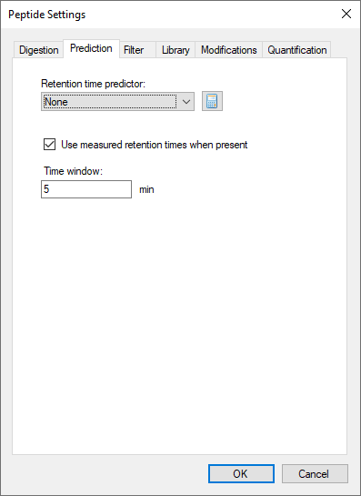
In this tab you can define filters to select peptides with certain properties.
Min length/Max length: You can use these fields to restrict the number of amino acid residues you are willing to allow in your target peptides.
Exclude N-terminal amino acids: The N-terminus of a protein might be post-translationally processed (modified and/or cleaved). Therefore, it may not be suited for protein quantification. You can use this field to exclude these peptides from analysis. In this tutorial, you will simply trust the peptide spectrum matching results from a DDA experiment and not rely on this exclusion.
Exclude potential ragged ends: Ragged ends are peptides with KK, RR, RK or KR sequences at one or both ends. Such peptides might not be fully cleaved and hence may not be suited for quantification. However, if no alternative peptides are available one might rather quantify with a ragged end peptide then not at all. In this tutorial, you can leave this option unchecked.
Exclude peptides containing: This option allows you to discard a priori peptides that, based on sequence would undergo secondary reactions. The residues “Cys, Met, His” are prone to modifications, such as oxidation. The option “NXT/NXS” is a glycosylation motif. The option “RP/KP” describes Lysine or Arginine followed by Proline which sometimes can be cleaved by trypsin. In this tutorial, you will not use any of these options.
Auto-select all matching peptides: When this option is activated peptides for target proteins are automatically selected from a spectral library or from a background proteome file. If unchecked, you would need to make these choices manually. In this tutorial, you should leave this option checked.
The Filter tab should look like this:
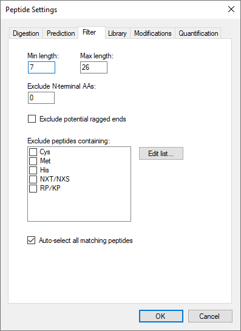
In this tab you can insert or build spectral libraries containing MS2 spectra. Spectral libraries can be downloaded from public sources or built within Skyline from your own data. Multiple libraries can be selected at the same time. Be aware that the order in the list matters: the higher up in the list, the higher the priority in case there is an MS2 spectrum for the same peptide in more than one library.
In this tutorial, you will build a library from data obtained from a set of synthetic isotopically labelled peptides that were bought to match each endogenous peptide of interest that will be monitored in the samples. These heavy peptides were analyzed in an LTQ Orbitrap Velos using a CID method. To build the library you need the search engine output file and the raw data. In our case the search engine output file is in pep.xml format and the raw data in the standard mzXML format.
You will use a second library with shotgun data from the same samples that you will analyse using PRM. These data were acquired in an Orbitrap Fusion Lumos using an HCD method. As the generation of this library takes longer than the previous one, you will upload an already generated library file. In the Library tab do the following to add the second library:
Tip! You can visualize and browse all peptides of your library in the Spectral Library Explorer
under
View → Libraries → Library Explorer.
Tip! Skyline supports building libraries from many peptide spectrum matching pipeline outputs. The list of supported files can be found online: https://skyline.ms/build-blib.url
Tip! In case you have more than one library, once you have a list of peptides uploaded, if both libraries contain an MS2 spectrum, at the top of the MS/MS spectrum tab you can select from the drop-down menu, which library spectrum you would like to see plotted.
Once the libraries are built, uploaded and activated, you can continue reviewing the other parameters in the Library tab:
Pick peptide matching: Select if peptides should be automatically selected according to the filter settings (defined in the Filter tab) before or according to the library settings defined below. In this tutorial you will use all pre-selected targeted peptides that appear in the library. You can leave the default setting (“Library”).
Rank peptides by: Here you can define a ranking of all peptides available for a given protein in the library based on peak intensities, number of spectra for a given peptide, or score for spectrum quality. In this tutorial you should leave this option inactive.
Limit peptides per protein: Limits the number of automatically selected peptides per protein from the library. In this tutorial you may leave this option blank.
The Library tab should look like this:
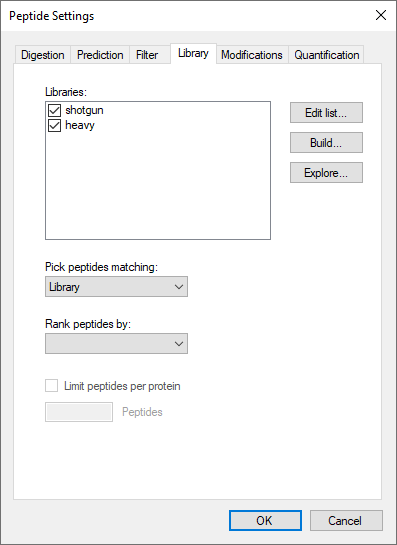
Structural modifications: Structural modifications concern chemical modifications of peptides. They can either be static (always present) or variable (sometimes present, sometimes not). By default “Carbamidomethyl (C)” is checked, which comes from the reduction and alkylation step during sample preparation to avoid formation of disulphide bonds between cysteine residues. Keep this modification.
Max variable mods and Max neutral losses: Select the maximal number of variable modifications and neutral losses according to your project. Leave the default setting (3 variable modifications and 1 neutral loss).
Isotope label type: Here you can define the isotope label type you plan to work with. For this tutorial leave the default “heavy” as the label type.
Isotope modifications: Here you can define the chemical composition of your isotopic modifications. To select the isotopic modifications:
Internal standard type: Define which labelling state should be your internal standard. In this tutorial, you will use spiked-in heavy reference peptides. So, you can keep the default setting “heavy”.
The Modifications tab should look like this:
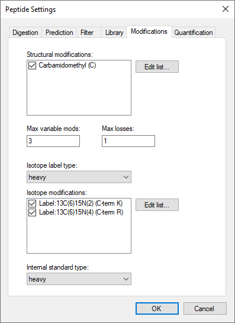
Tip! This tab might be slightly different in your case (you might have fewer or more modifications than the displayed in the screenshot if you have used Skyline before). You just need to make sure you select the indicated modifications.
Regression fit: This option calculates a regression fit from consecutive standard dilutions to produce a calibration curve for peptide quantitation. Options for the regression fit can be i) none, ii) linear, iii) linear through zero, iv) bilinear, v) quadratic, and vi) linear in log space. Leave the default setting “None”.
Normalization Method: It allows the use of an internal heavy standard for intensity normalization.
Regression Weighting: It sets the regression weighting factor which can be i) none, ii) 1/x, or iii) 1/(x*x). Leave the default setting “None”.
MS Level: It determines whether peptide quantitation is performed at the MS1 or MS2 level.
Units: In this box you can include the concentration or amount units of your standards.
The Quantitation tab provides settings to facilitate the peptide quantitation by PRM, SRM, DIA, or MS1 acquisition methods using calibration curves which can be single point (internal or external) or multiple point (external) calibration curves with a regression fit.
Later in this tutorial you will perform a single point internal calibration using a heavy-labeled internal standard by simply spiking a known amount of heavy labeled peptide into a sample to quantify endogenous proteins.
The Quantification tab should look like this:
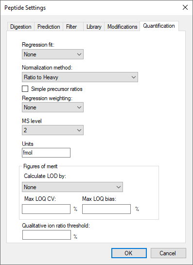
Precursor mass and Product ion mass: Here you define the basic MS parameters of your data. For both, precursor and product ion mass, this tutorial will use the default monoisotopic mass.
Collision energy: In this PRM experiment you will not use this option as the collision energy is calculated by the instrument. Use the default “None”.
Declustering potential: Define the declustering potential that should be applied to your sample when it is injected into the mass spectrometer. Use the default “None”.
Optimization Library: Skyline can store the results of a collision energy optimization experiment into a library and therefore, use the optimized values in future experiments. Use the default “None”.
Use optimization values when present: If you have carried out a collision energy optimisation experiment within Skyline, you can directly apply the optimised values. Use the default “None”.
The Prediction tab should look like this:
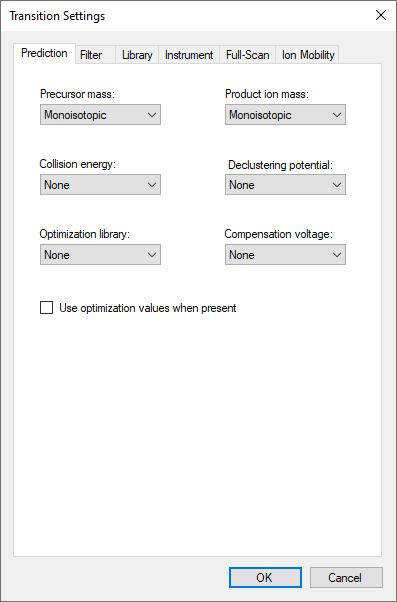
Precursor charges: Define which precursor charge states you would like to consider for your PRM measurements.
Product ion charges: Define which product ion charge states you would like to consider for your SRM measurements.
Ion types: Define which product ion types you would like to consider for your PRM measurement (you can define a, b, c, x, y, z and p ions, p stands for precursor).
Product ion selection: In this region, you can define a filter to automatically select transitions for all peptides in your Skyline document. For example, to filter for the whole y-ion series, ranging from the first to the last y-ion of a peptide, enter: From: “ion 1” and To: “last ion”. The MacCoss lab frequently used “ion 3” to exclude y1, y2, b1, and b2.
Special ions: With this option, you can select other types of ions than the standard y or b like immonium ions or iTRAQ/TMT reporter ions. Further criteria to automatically include typically very intense transitions, such as N-terminal to Pro or C-terminal to Glu or Asp, can be selected or custom defined.
Precursor m/z exclusion window: Here you can exclude a certain mass window around the precursor m/z value for transition selection. In this m/z range transitions are typically very noisy and therefore not suited for identification and quantification. Or, if you are using resonance excitation CID there may be no signal at all in this range.
Auto-select all matching transitions: Needs to be checked if transitions should be automatically selected for all peptides based either on the filter settings or the library. The default is checked.
The Filter tab should look like this:
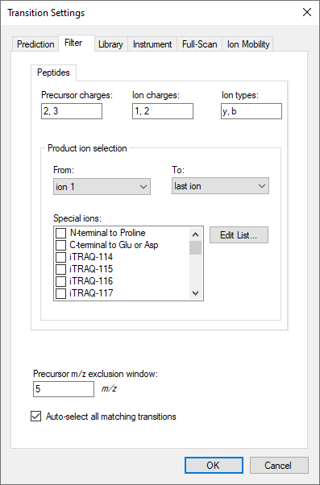
Ion match tolerance: Here you can define the mass accuracy you would like to tolerate for the selection of fragment ions from your spectral library. This depends on the instrument type that was used to acquire the library spectra. Lower values help to get a more specific peak assignment of the spectra, but if the instrument did not have this accuracy, Skyline may fail to annotate peaks. The MS/MS spectra used to build the library were acquired on an Orbitrap mass analyser.
If a library spectrum is available, pick its most intense ions: Here you can specify if the library should be used to guide transition selection and how many transitions per precursor should be considered. The default is checked.
Pick: Here you can specify the maximum and minimum numbers of product ions you wish to use for transitions. If the spectrum does not contain enough annotated peaks that match your selection criteria, then the peptide precursor will be skipped.
Note: In PRM the number of selected transitions does not affect the cycle time because the MS2 data is acquired in full scan mode. Therefore, the information of all the ions is available in the data. You can decide to extract more ions now and later select only the most intense or the ones without interferences. In contrast, in SRM each transition “costs” a certain time (dwell time), and therefore one needs to limit the number of transitions monitored within a method not to exceed a cycle time value that ranges from 1 to 3 seconds. For this reason, in SRM the number of transitions extracted per peptide is often limited to 3-5.
From filtered...: Here you can choose which settings from the Filter tab you would like to consider for the automatic transition selection.
The Library tab should look like this:
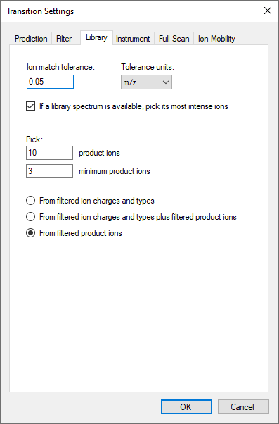
Min m/z and Max m/z: Here you specify the m/z range of you instrument or your acquired data.
Dynamic min product m/z: This function is only useful for chromatograms from LTQ MS2 data. It allows to restrict the product m/z values to being greater than a dynamic minimum, based on the precursor m/z, consistent with the limits the LTQ imposes. Leave the default of unchecked.
Method match tolerance m/z: Here you can define the tolerance in m/z difference between the theoretical m/z calculated by Skyline and the m/z given in an imported raw file. Raw files acquired with methods generated with Skyline should have differences less than 0.0001 between Skyline and raw file m/z values. However, if other m/z calculators have been used for method generation minor m/z differences and even mistakes can occur. Leave the default setting of “0.055” m/z which accounts for one decimal place of precision in m/z specification with some extra for human error in rounding.
Firmware transition limit: In case your instrument of choice is an older triple quadrupole with a maximum number of transitions it will accept, you can enter this here. Leave blank.
Firmware inclusion limit: In case your instrument of choice is a full scan instrument with a maximum number of precursor m/z values it will accept for PRM, you can enter this hear. Leave blank.
Min time and Max time: Here you can limit the part of the HPLC gradient to extract data from. Leave blank.
The Instrument tab should look like this:
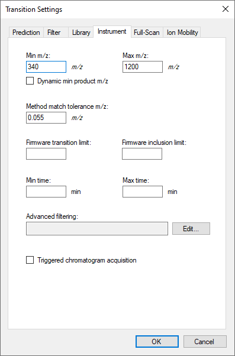
MS1 filtering: You are not going to extract MS1 data in this tutorial. Leave the default for Isotope peaks included as “None”.
MS/MS filtering: Here you specify how the MS/MS spectra in your data were acquired and how to extract chromatograms from these spectra.
Retention time filtering: Here you can choose from several options to limit the part of the HPLC gradient to extract data from. These are most useful when spectra are present across the entire gradient, as with MS1 in DDA, or both MS1 and MS/MS in DIA.
The Full-Scan tab should look like this:
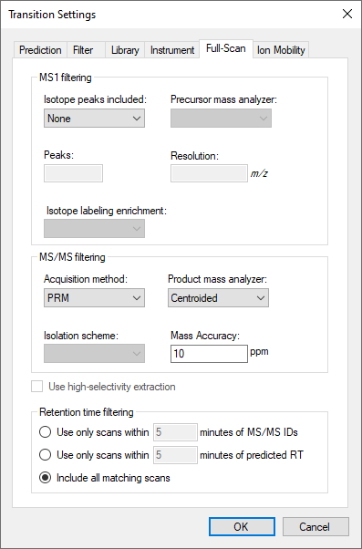
These settings allow prediction of ion mobility values (compensation voltage for FAIMS, drift time for drift tube or traveling wave IMS, inverse reduced ion mobility – 1/K0 – for TIMS). Leave the default “None” because this tutorial does not use ion mobility.
After setting up all peptide and transition settings in the Skyline document, you will now generate a precursor list for the PRM measurements and automatically select the best transitions for each peptide based on the information found in a spectral library.
Depending on the level of available information you can directly insert a transition list into Skyline (Edit > Insert > Transition list). If you just know your target proteins and their best representative peptides, you can insert peptide sequences (Edit > Insert > Peptides). Finally, if you only have a number of target proteins, you can insert a protein list (Edit > Insert > Proteins) and Skyline will automatically select peptides and transitions according to your settings.
In this tutorial, you will monitor 19 target proteins, each represented by 1-3 proteotypic peptides (31 peptides in total). The optimal proteotypic peptides have been selected based on previously acquired data.
Because you chose the Import Peptide List to start this tutorial, Skyline should now be showing the Insert form with the Peptide List tab. To provide the peptide list for this tutorial do the following:
The Insert form should now look like this:
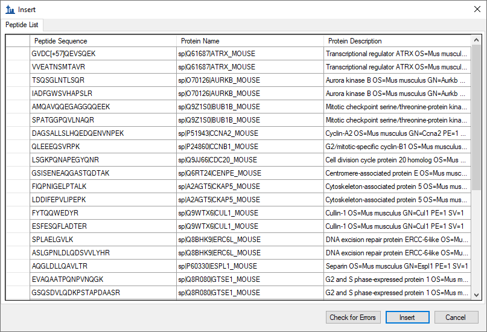
Skyline has found the peptides in the background proteome and automatically added the corresponding protein information. If you add a peptide sequence which is not unique for a single protein Skyline will ask you how to proceed in these cases.
To insert peptides carrying modifications you can indicate these modifications in the peptide sequences using squared brackets containing the mass difference. For example, peptides carrying carbamidomethylated cysteines are inserted as:
GVDC[+57]QEVSQEK
In this case, it is not strictly necessary because the “Carbamidomethyl (C)” modification applies to all cysteines by default. A plain peptide sequence containing C’s and no modification annotations will have this modification automatically applied.
Tip! You can also insert modifications in a particular sequence after the peptides are inserted by selecting the peptide in the Targets view, right-click and choose Modify.
If all settings are setup correctly, Skyline will automatically insert the 31 target peptides under the correct protein name with selected transitions according to the filter and library definition. If the peptide was identified in the library with charge 2 and 3 both will appear (and each will have a light and heavy form).
In total you should end up with a document containing (see lower right corner):
19 proteins, 31 peptides, 106 precursors and 896 transitions
To see all the chosen transitions in the Targets view:
The Edit > Collapse All/Expand All functions are very useful for quickly changing views for all proteins/peptides/precursors.
Tip! Hover with the cursor over the protein/peptide/precursor/transition to get specific information on the respective item.
Tip! The numbers in the square brackets behind the peptide sequence indicate the position of the peptide in the protein.
Tip! Right-click on protein/peptide/precursor to see several options for refining and/or modifying. If you click Pick Children on any level, you can add or remove selected peptides per protein, precursor charge states/isotypes per peptide, and transitions per precursor. Click on the funnel icon to see all options.
Tip! For each target peptide you can view the matching MS/MS spectrum of the library in the Library Match tab (usually by default visible, if not, try View > Libraries > Library Match). To select the ion type that you want to label in the MS2 spectrum right-click on the spectrum and select any additional ion types you are interested in.
Your Skyline document should now look like this:
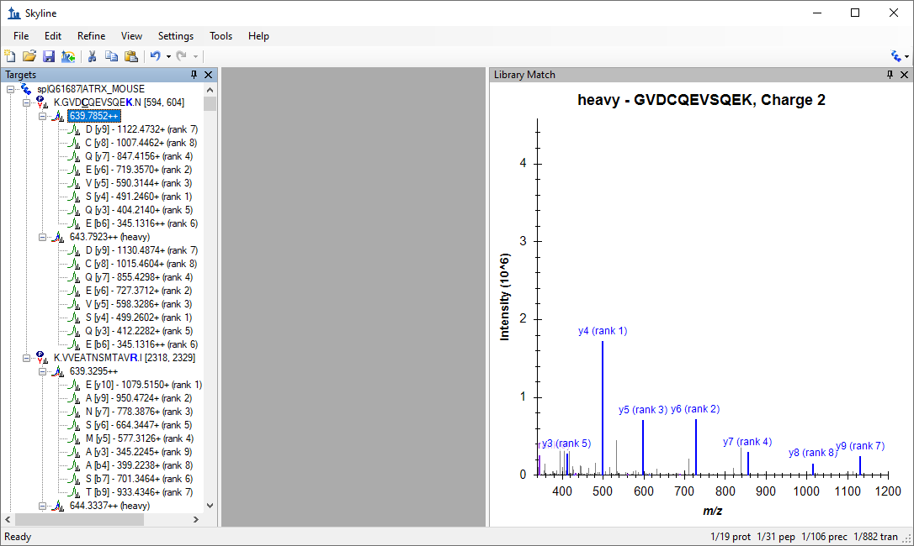
To create a PRM acquisition method for your instrument you need to generate a list of precursors to be isolated fragmented. The “isolation list” must include the precursor m/z, the precursor charge (z) and a unique name. To generate the list, this tutorial will use built-in Skyline support:
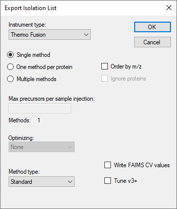
The term “scheduled PRM” refers to a method where the precursors are fragmented only for a short time window around their expected retention time. Using this approach, the number of measurable precursors per run can be greatly increased. The more precisely retention times of peptides can be predicted, the narrower a measurement window can be used, and the more peptides can be measured in a single run without loss of sensitivity.
Here you will learn how to generate a scheduled method using retention time information from previous experiments. You will use the information of the retention time from a previous injection of the target peptides.
To import the run you will use for its retention time information, do the following:
The Import Results form should appear looking like this:

Once the import has completed, you have measurements of targeted peptides with retention times. In peptides with 2 precursors in the library (charge +2 and charge +3), only one of the two precursors has been acquired.
The Skyline Window should look like this:
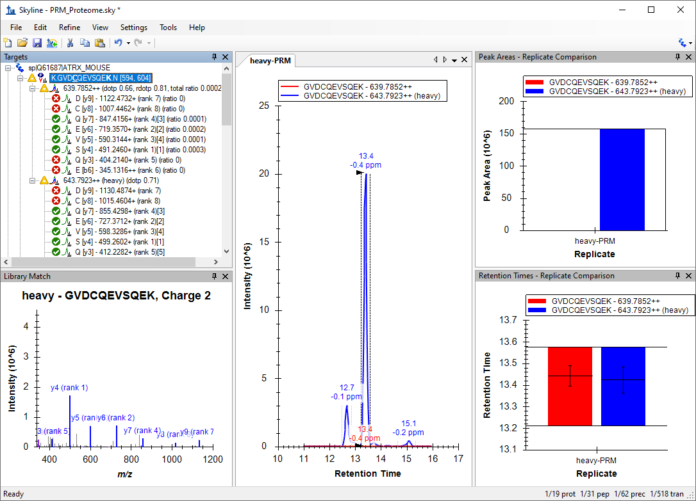
The document should now contain 62 precursors (two per peptide, one for the light version and one for the heavy version).
Now that you have information about retention time, Skyline will assign retention times to all target peptides defined in your document. Skyline provides a graphical view showing the number of concurrent precursors, which will be concurrently measured depending on the selected retention time window size. To show this graph:
It will appear on top of the Retention Times – Replicate Comparison graph.
Note: The size of the window that you finally will select in your instrument depends on different factors like the reproducibility of your chromatography, the number of concurrent transitions and the resolution that you use to acquire your data (higher resolutions require longer acquisition times). Your goal has to be to obtain a maximum cycle time that is compatible with a good quantitation (at least 8-10 points per chromatographic peak).
To export a list of precursors you can import into a Thermo method file (.exp) do the following:
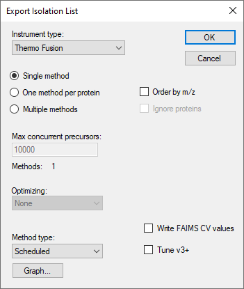
Tip! You can use File ü°™ Open containing folder‚Äù to open a File Explorer window on the folder containing the Skyline file.
Tip! Sometimes is useful to be able to remove the light versions of each target peptide, you could do it by:
To recover the information from the light peptides, use Edit ü°™ Undo (Ctrl-Z), or:
After generating an isolation list and acquiring data using parallel reaction monitoring (PRM) you will perform analysis of the acquired dataset. Skyline offers a useful graphical interface that supports straightforward peak intensity and retention time comparison over many samples.
The cell cycle murine fibroblast samples were digested with trypsin and then, a mixture of 31 isotopically-labelled peptides with 13C615N2-Lysine and 13C615N4-Arginine—one for each peptide of interest—was spiked into the tryptic digest. You will use these heavy-labelled peptides as an internal standard to identify and quantify the 19 proteins of interest in three replicates (see table in Appendix 1). Moreover, you will use these internal standards to determine the amount of endogenous proteins in our sample.
Remove the run with the heavy peptides.
Import the quantitative runs:
Display Peak Areas and Retention Times graphs (if not already there):
There are different options to arrange your graphs. You should choose whatever is most convenient for you on your screen. For now, arrange the three different states in three windows and sort the three replicates in tabs by doing the following:
Your Skyline document should now look like this:
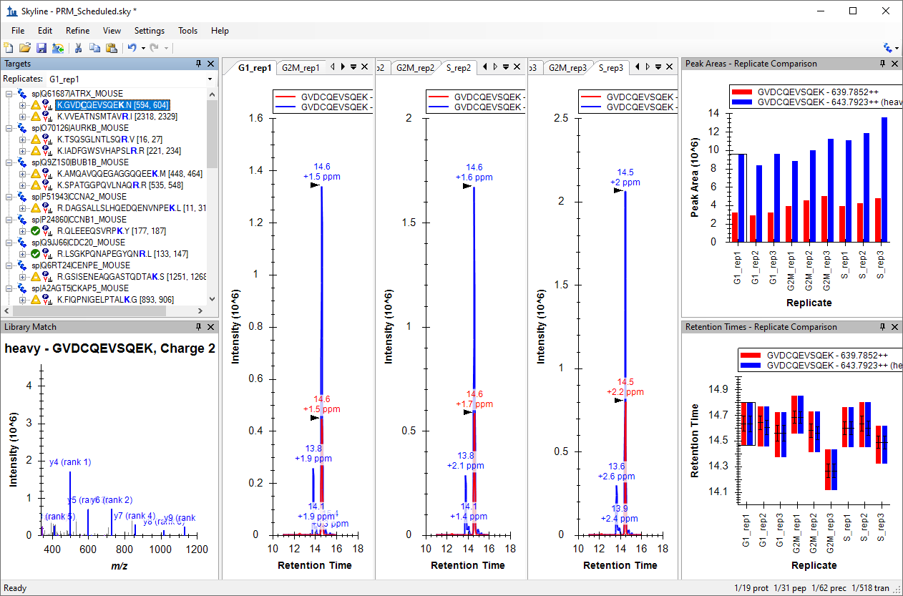
In this view you can visualize together the heavy and the light traces. This layout is good to check the peak integration.
The Skyline main window should look something like this:
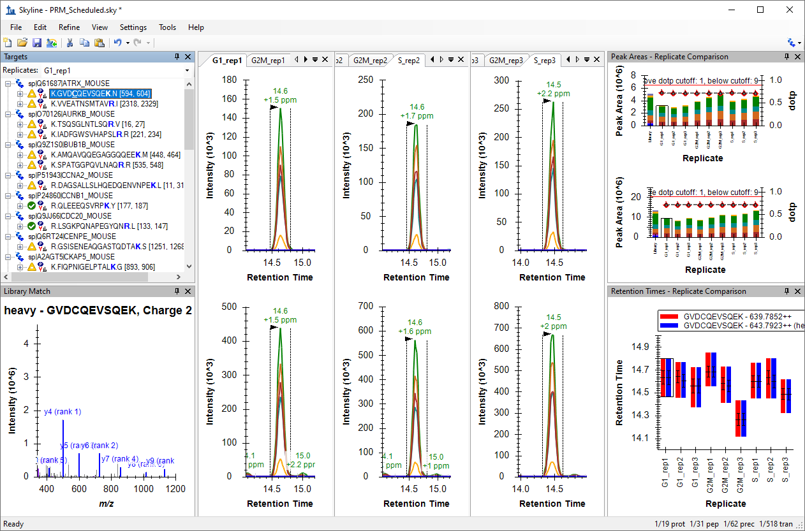
This layout is good to check interferences in individual transitions.
To further aid manual peak picking you can:
The Skyline main window should look something like this:
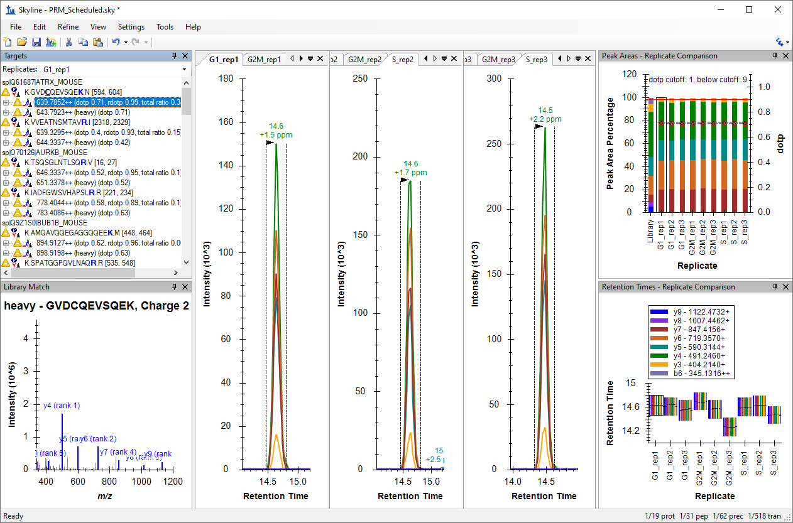
Inspect the signals of the 31 target peptides over all 9 runs. Do this process in two steps: in a first round just refine the peak picking (A), and in a second round refine the transitions for quantification (B).
For correct peak picking and therefore, peptide identification, one needs as many co-eluting sequence information ions as possible that correlate in intensity with a reference peptide. The reference peptide can be either the heavy-labelled internal standard or the reference library.
You have selected your transitions based in the information found in the libraries. One of the libraries ("heavy") was acquired in another instrument using a different type of fragmentation (LTQ-OT-Velos, CID) than the ones used in the PRM acquisition (Lumos, HCD). For this reason, the correlation between the intensities of the fragment ions in the library and in the acquired data (dotp) is not very high in some cases and sometimes transitions selected from the library are not detected in the data.
To remove the non-observed transitions:
For example in the first peptide GVDCQEVSQEK remove y9, y8 and b6 ions.
You should do the same for all 31 peptides.
Tip! A quicker way to remove most of the things in your document marked with a red circle with a white X icon ( )
)
Note: This uses the signal across all replicates. So, transitions with red circle icons in less than half the data will not be removed. You can use "0.3" if you want to make that less than one third.
Now in the interest of time use the above technique to reduce the chosen transitions to only the ones reliably detecting signal.
If you want to continue the exercise by yourself later:
Now:
In contrast, for peptide quantitation one requires transitions with a good signal-to-noise ratio, which are free of interferences. In an extreme case, one could use several transitions for peptide identification, and only the most intense for peptide quantitation.
Tip! You can also use normalized views to spot interferences: Right-click the Peak Areas window, choose Normalized To and click Total. Then either select the light precursors or focus only on the light pane of the Peak Areas graph where the y-axis is "Peak Area Ratio To Heavy" which will make interferences stick out with low "rdotp" (Ratio Dot-Product) values and inconsistent ratios for individual transitions.
You should do the same for all 31 peptides.
Now in the interest of time you should continue with this tutorial after deleting the most extreme example explained above.
If you want to continue the exercise by yourself later, review all the peptides and delete (or mark as non-quantitative) low quality transitions.
Once all the data has been reviewed and properly refined, you will use Skyline to quantify the proteins of interest in our samples.
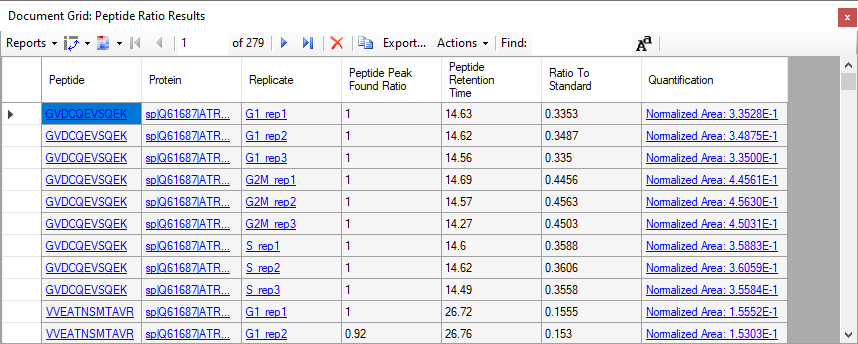
You now have a table with the ratio light-to-heavy ("Ratio To Standard") for each peptide in each replicate. The Quantification shows the same value in scientific notation preceded by "Normalized Area:".
Note: In case the columns that are shown in your "Peptide Ratio Results" view are the same as the shown in the screenshot. They are the Skyline defaults for this custom report. You can modify the columns in this report using the Reports > Edit Report menu item. In the Customize Report window, you can add and remove columns to your report as desired. You can click the upper right "X" to remove columns and the arrows to change the order of the columns.
Now you are going to introduce the known amount of your internal standard to help Skyline calculate a more interesting quantitative value. In the Document Grid window:
In the Internal Standard Concentration column, add the known amount of fmol for each heavy-labeled peptide.
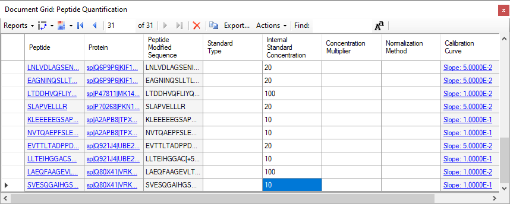
Now, again from the Document Grid window:
Now, in the quantification column you have the amount of each endogenous peptide, in fmol units, calculated with the single-point internal-calibration method.
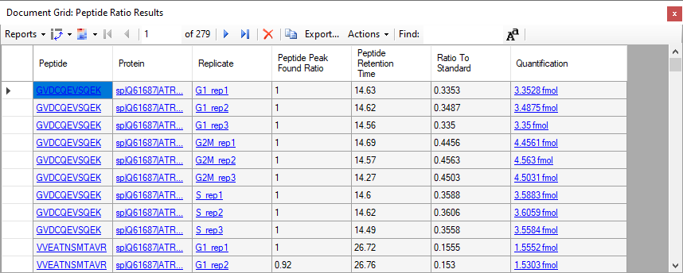
To perform statistical analysis of the results you first need to annotate which samples are replicates. Skyline allows you to associate additional information with the runs in the document by defining custom annotations.
To view the Annotation Settings form, perform the following steps:
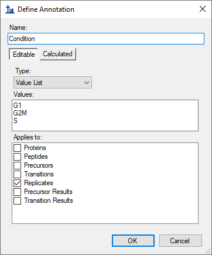
Next, generate another annotation named "BioReplicate":
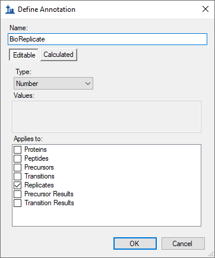
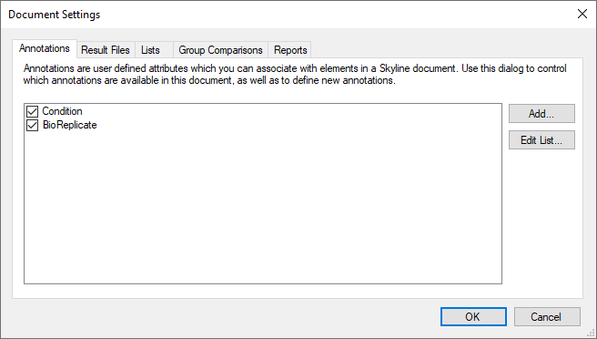
Editing the annotation values in Skyline is done using the Document Grid.
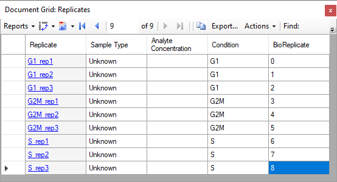
Tip! You can use your keyboard to type directly into the Document Grid, using Enter to move to the next line, Tab to the next column, F2 to enter cell edit mode, up and down arrows to select from a Value List once in cell edit mode, and arrow keys to navigate the grid when not in cell edit mode, all just like in Excel.
Now you can group the data based on "Condition" or "BioReplicate".
The Peak Areas and Retention Times - Replicate Comparison graphs should like this for the first peptide in the list (K.GVDCQEVSQEK.N [593, 603]):
Skyline can perform pairwise group comparisons of peptide and protein peak areas. The comparisons are performed by i) considering all the available transition peak areas for a peptide or protein, ii) optionally dividing by a normalization standard, iii) taking the log, iv) averaging any technical replicates and v) performing a t-test on the resulting values.
Skyline automatically discards replicates with missing values.
To perform the group comparisons follow the next steps:
The Edit Group Comparison form should look like this:
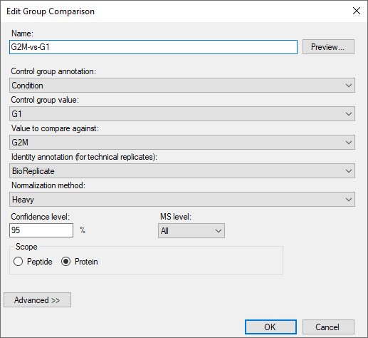
The second group comparison should look like this:
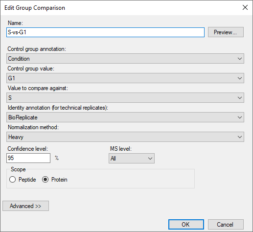
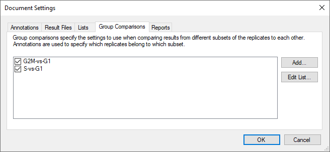
To inspect the group comparison you just defined do the following:
Skyline will show a grid view that looks like this:
| 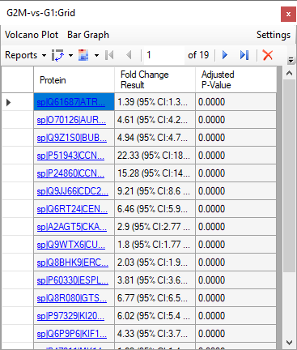 | 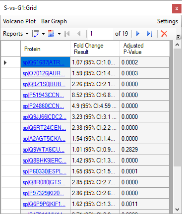 |
Be aware that numbers can be different in your document depending on which peptides/transitions you have selected for the refined file.
In the "G2M-vs-G1" comparison:
Skyline adds a graph pane to the view that looks like this:
To sort the data by fold change:
This will sort the grid, and the graph like this:
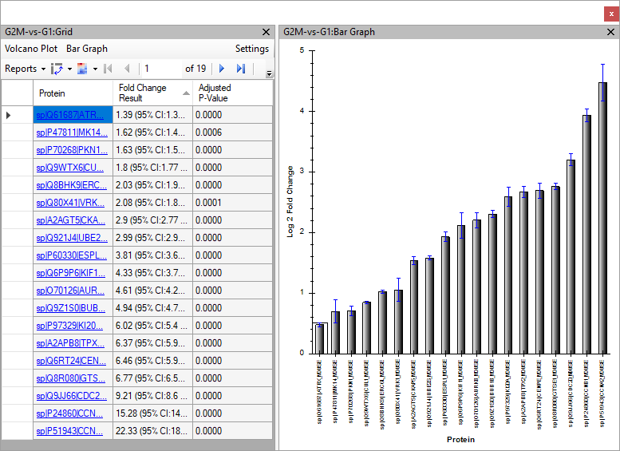
Skyline allows you to export from the Skyline document to a .csv file many values and statistics that can be used for further processing in other tools like Excel or R. The Skyline Results and Document Grids provide access to many of these values and allow you to edit custom annotations as you work with your data.
You saw an example of a custom report before and now you will generate a report with some quantitative data to further illustrate how to use this Skyline feature.
Note: For detailed information about all options see the Skyline tutorial "Skyline Custom Reports" on the Skyline website.
https://skyline.ms/tutorial_custom_reports.url
To generate the report for this tutorial do the following:
The Export Report form offers you a range of predefined report formats. To create a custom report:
An Edit Report window opens.
Your Edit Report form should now look like this:
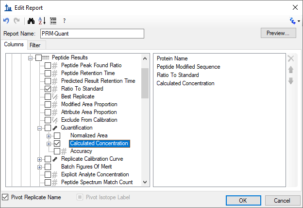
In case you want your new report to be saved to the document, so that it will be available in whatever installation of Skyline opens it next, you can do the following:
The next time anyone opens the .sky file you saved, they will also get the "PRM-Quant" report.
In this tutorial, you have learned how to do a thorough review of all peptide and transition settings in order to set up a Skyline document for PRM. Then to add a set of peptide targets from a formatted list. You have exported an unscheduled instrument method, and imported data from a prior run to export a scheduled instrument method. You imported 9 runs acquired from with a schedule method like this, measuring endogenous peptides with stable isotope labeled reference standards, and assessed the quality of the chromatographic data, checking for interference and removing transitions with evidence of it. You set up both single-point internal calibration and a group comparison for relative quantification. And you created a custom report which you saved in the Skyline document for the future use of anyone with a copy of the document.
1. Stacy D. Sherrod et al. Label-Free Quantitation of Protein Modifications by Pseudo-Selected Reaction Monitoring with Internal Reference Peptides. J. Proteome Res. (submitted)
2. Schilling, B. et al. Platform Independent and Label-Free Quantitation of Proteomic Data Using MS1 Extracted Ion Chromatograms in Skyline. Application to Protein Acetylation and Phosphorylation. Mol Cell Proteomics (2012).doi:10.1074/mcp.M112.017707
List of the spiked amounts of the 31 isotopically-labelled peptides used in this study
| Accesion | Gene | Sequence | fmol/ul |
| Q61687 | ATRX | GVDCQEVSQEK | 10 |
| Q61687 | ATRX | VVEATNSMTAVR | 10 |
| O70126 | AURKB | TSQSGLNTLSQR | 10 |
| O70126 | AURKB | IADFGWSVHAPSLR | 20 |
| Q9Z1S0 | BUB1B | AMQAVQQEGAGGQQEEK | 10 |
| Q9Z1S0 | BUB1B | SPATGGPQVLNAQR | 10 |
| P51943 | CCNA2 | DAGSALLSLHQEDQENVNPEK | 10 |
| P24860 | CCNB1 | QLEEEQSVRPK | 2 |
| Q9JJ66 | CDC20 | LSGKPQNAPEGYQNR | 2 |
| Q6RT24 | CENPE | GSISENEAQGASTQDTAK | 2 |
| A2AGT5 | CKAP5 | FIQPNIGELPTALK | 100 |
| A2AGT5 | CKAP5 | LDDIFEPVLIPEPK | 20 |
| Q9WTX6 | CUL1 | FYTQQWEDYR | 10 |
| Q9WTX6 | CUL1 | ESFESQFLADTER | 20 |
| Q8BHK9 | ERC6L | SPLAELGVLK | 10 |
| Q8BHK9 | ERC6L | ASLGPNLDLQDSVVLYHR | 20 |
| P60330 | ESPL1 | AQGLDLLQAVLTR | 20 |
| Q8R080 | GTSE1 | EVAQAATPQNPVNQGK | 10 |
| Q8R080 | GTSE1 | GSQSDVLQDKPSTAPDAASR | 10 |
| P97329 | KI20A | LAASASTQQFQEVK | 10 |
| P97329 | KI20A | TPTCQSSTDSSPYAR | 2 |
| Q6P9P6 | KIF11 | LNLVDLAGSENIGR | 20 |
| Q6P9P6 | KIF11 | EAGNINQSLLTLGR | 20 |
| P47811 | MK14 | LTDDHVQFLIYQILR | 100 |
| P70268 | PKN1 | SLAPVELLLR | 20 |
| A2APB8 | TPX2 | KLEEEEEGSAPATSR | 10 |
| A2APB8 | TPX2 | NVTQAEPFSLETDK | 10 |
| Q921J4 | UBE2S | EVTTLTADPPDGIK | 20 |
| Q921J4 | UBE2S | LLTEIHGGACSTSSGR | 10 |
| Q80X41 | VRK1 | LAEQFAAGEVLTDMSR | 100 |
| Q80X41 | VRK1 | SVESQGAIHGSMSQPAAGCSSSDSSR | 10 |